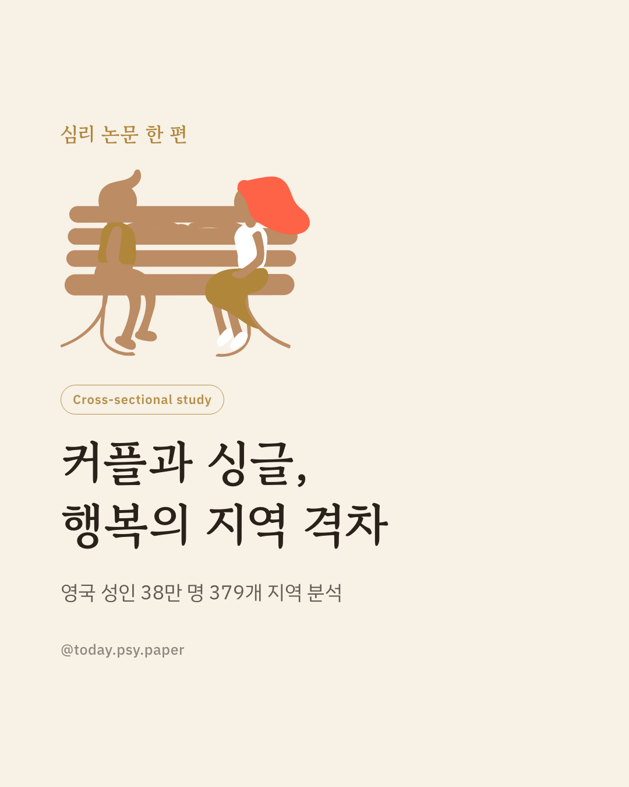
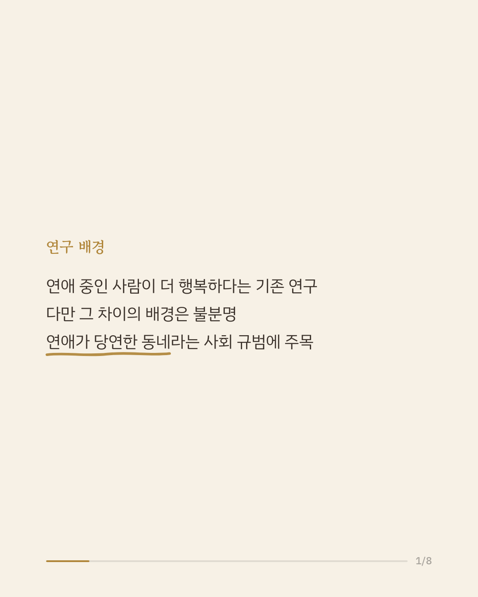
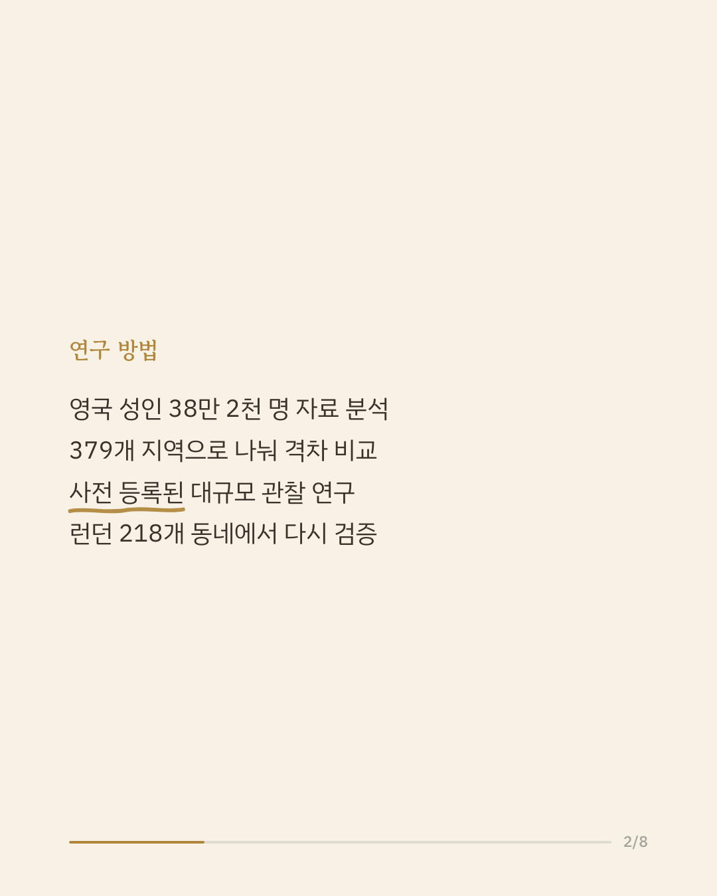
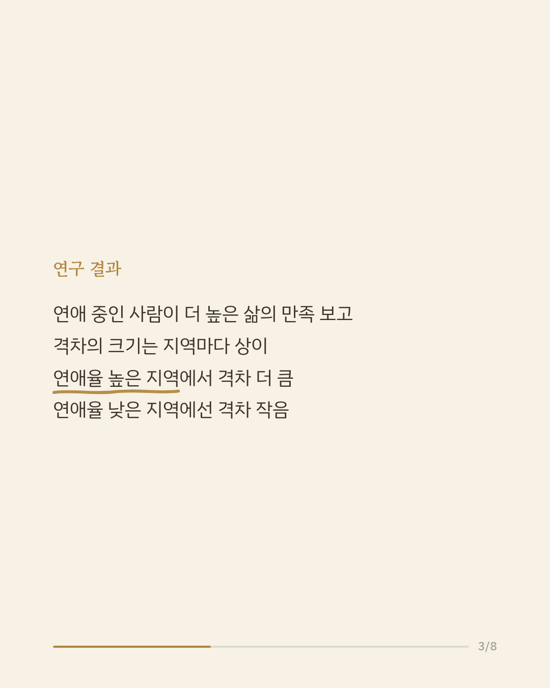
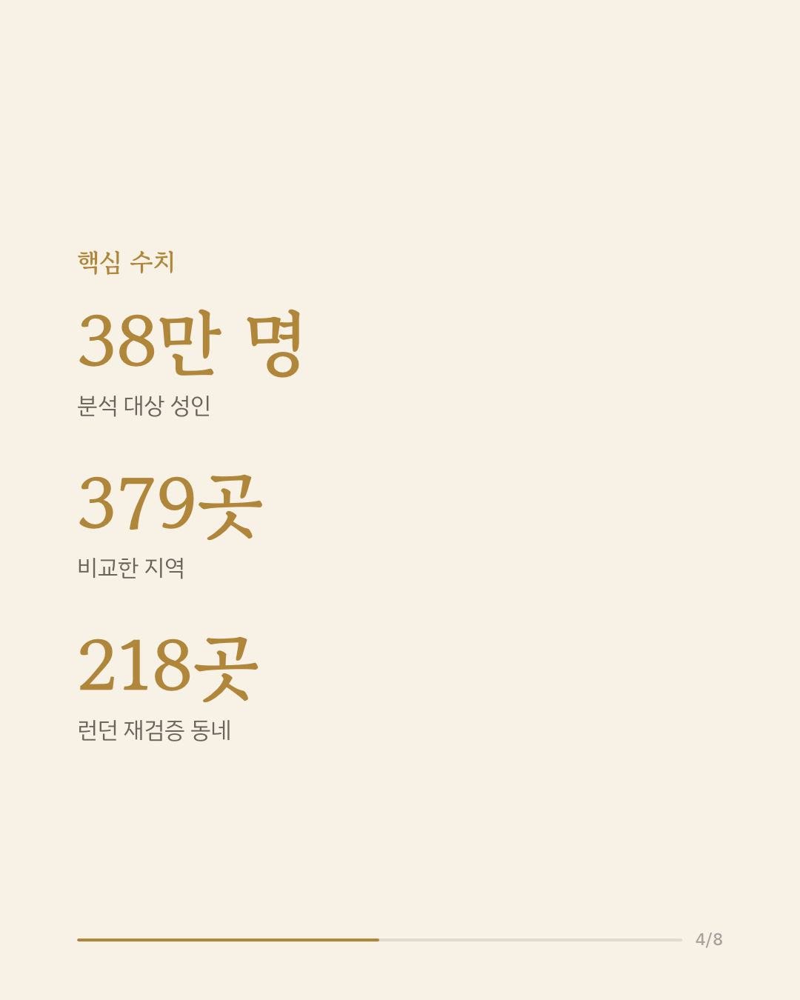
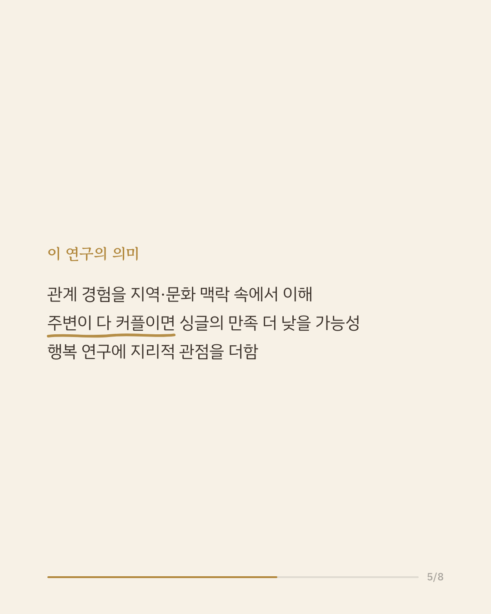
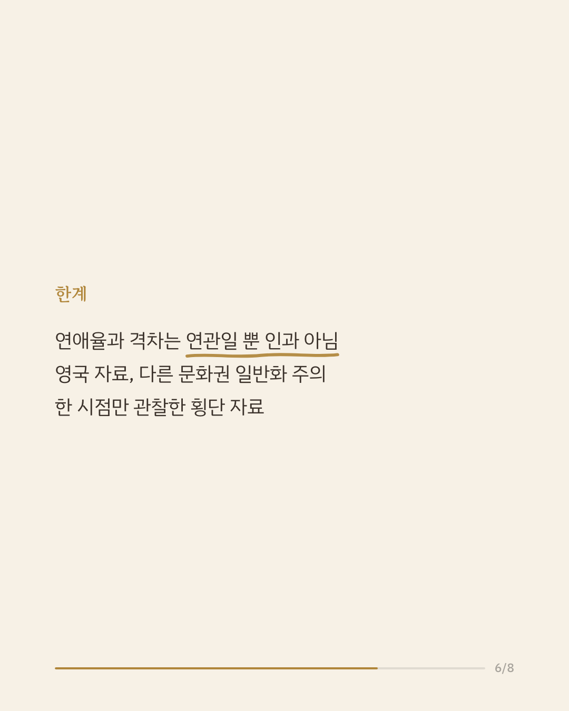
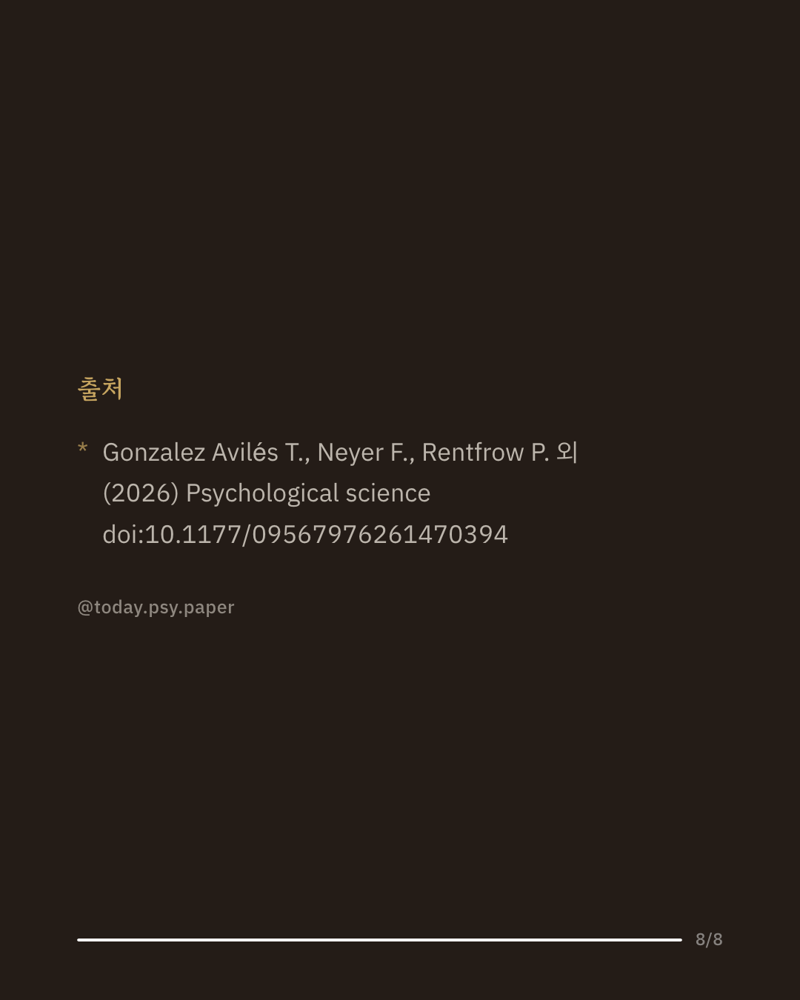

연애 중인 사람은 싱글보다 삶의 만족, 즉 행복을 더 높게 보고하는 경향이 여러 연구에서 확인돼 왔습니다. 다만 이 차이가 왜, 어디에서 생기는지는 충분히 밝혀지지 않았습니다. 연구진은 영국 성인 38만 2,078명의 자료를 379개 지역으로 나눠, 지역의 연애율에 따라 이 격차가 달라지는지 살펴봤습니다. 연애 중인 사람이 싱글보다 삶의 만족을 더 높게 보고하는 기존 결과는 그대로 재현됐습니다. 그런데 그 격차는 지역마다 달라, 연애율이 높은 지역일수록 커지고 낮은 지역일수록 작아지는 양상이 나타났습니다. 이 패턴은 여러 교란 변수를 통제한 뒤에도, 런던 218개 동네를 대상으로 한 소규모 재분석에서도 유지됐습니다. 이 결과는 관계 경험을 개인만의 문제로 보지 않고, 그 사람이 사는 지역의 규범과 분위기 속에서 이해해야 함을 보여 줍니다. 다만 연애율과 만족 격차의 연관이 인과관계를 뜻하지는 않으며, 영국의 한 시점 자료라는 점에서 다른 문화권으로 넓혀 읽기는 어렵습니다. 단일 연구이므로 확대 해석은 조심해야 합니다. 출처: Psychological Science (2026), 'Ties That Bind, Places That Matter: The Life-Satisfaction Gap Between Partnered and Single Individuals Varies Across Regions' #사회심리학 #삶의만족도 #심리학연구 #논문리뷰 #연애심리
python3 publish.py 42636173